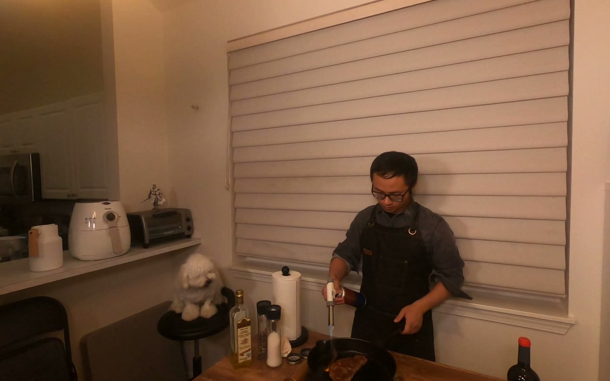

10 seconds · 38 MB download
See it in your space
Turns on your camera and motion sensors. Nothing is recorded or sent anywhere.
0:00

10 seconds · 38 MB download
See it in your space
Turns on your camera and motion sensors. Nothing is recorded or sent anywhere.